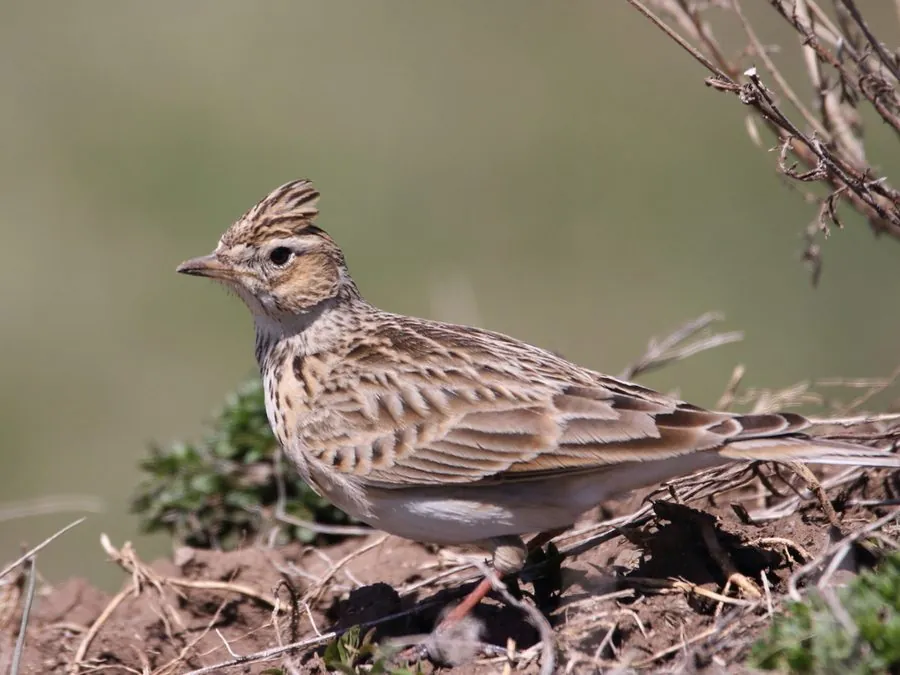

鸟类 · 动物界
云雀 Alauda arvensis

在开阔田野上空边飞边唱的鸣禽，雄鸟会垂直升空后悬停高歌，歌声清亮悠长，被称为“田野歌手”。
- 分类
- 门脊索动物门纲鸟纲目雀形目科百灵科属云雀属
- 栖息环境
- 开阔的草原、草甸、农田和机场草地，在地面凹坑中营巢
- 地理分布
- 欧亚大陆广布，中国北方繁殖、南方越冬，多为候鸟
- 保护级别
- IUCN 无危（LC）；中国国家二级保护动物
物种志
云雀体长 16–18 cm，翼展 30–36 cm，体重 30–45 g。上体呈沙褐色并密布黑色和浅色纵纹，腹部灰白，胸前有浅褐色纵斑，头顶有一撮可以竖起的短羽冠，后爪特别长，适合在草地上站立。飞行时，翅膀后缘的白色羽毛和外侧尾羽的白斑会清晰显露。
云雀广泛分布于欧亚大陆，中国北方繁殖、南方越冬，是典型的农田与草原鸟类。它们栖息在开阔的草原、草甸、农田和机场草地，把巢建在草丛深处的凹坑里，每窝产卵 3–5 枚，孵化 11–12 天，每年可繁殖 2–3 窝。云雀以草籽和谷物为主食，繁殖期也捕食昆虫喂养雏鸟。雄鸟最著名的本领是边飞边唱：它会从地面垂直升空到 50–100 m 的高度，在空中悬停并连续鸣唱数分钟，再缓缓降落，因此得名“叫天子”。
形态与习性
- 食性草籽、谷物为主，繁殖期捕食昆虫
- 体长16–18 cm
- 翼展30–36 cm
- 体重30–45 g
- 繁殖地面凹坑营巢，每窝 3–5 枚卵，孵化 11–12 天
- 鸣唱雄鸟垂直升空至 50–100 m 悬停鸣唱
- 寿命野外约 3–5 年
趣味知识
- 云雀雄鸟会从地面垂直升空，在空中悬停鸣唱，再缓缓降落，被形容为“云中歌唱”。
- 为了躲避地面天敌，云雀把巢建在草丛深处的凹坑里，很难被发现。
- 云雀的歌声可持续数分钟，一只雄鸟常边飞边连续鸣唱。
- 英国诗人雪莱的《致云雀》写的正是这种边飞边唱的小鸟。